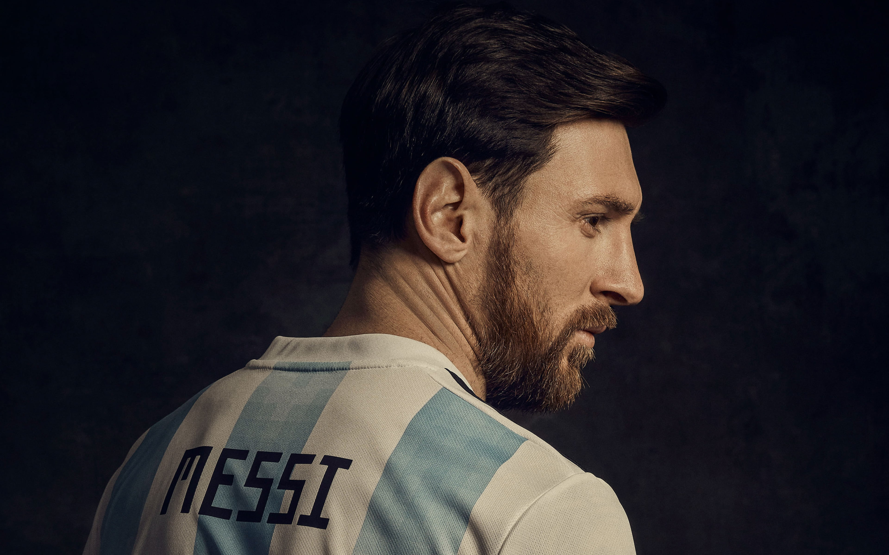

Lionel Andrés Messi, also known as Leo Messi, is an Argentine
professional footballer who plays as a forward for Ligue 1 club Paris
Saint-Germain and captains the Argentina national team.Often
considered the best player in the world and widely regarded as one of
the greatest players of all time, Messi has won a record seven Ballon
d'Or awards, a record six European Golden Shoes, and in 2020 was named
to the Ballon d'Or Dream Team.
Personal Information

Until leaving the club in 2021, Messi had spent his entire
professional career with Barcelona, where he won a club-record 35
trophies, including ten La Liga titles, seven Copa del Rey titles and
four UEFA Champions Leagues. A prolific goalscorer and creative
playmaker,Messi holds the records for most goals in La Liga (474), a
La Liga and European league season (50), most hat-tricks in La Liga
(36) and the UEFA Champions League (8), and most assists in La Liga
(192), a La Liga season (21) and the Copa América (17). He also holds
the record for most international goals by a South American male
(81).Messi has scored over 750 senior career goals for club and
country, and has the most goals by a player for a single club.